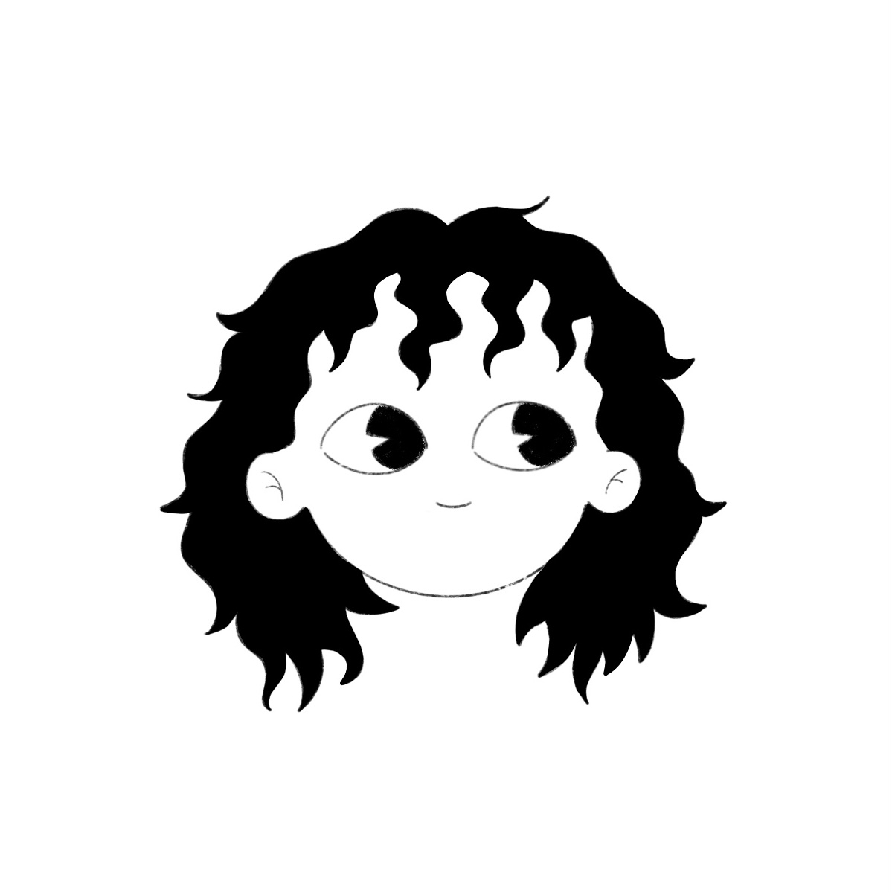

Farideh Sousani
farideh.sousani@studio.unibo.it
This project was developed for the course Information Modeling and Web Technologies within the Digital Humanities and Digital Knowledge program. Our website, “Steadfastness,” focuses on Palestine highlighting stories, objects, and histories that embody resilience and resistance of this country through nearly a century of war. Our goal is to contribute to broader awareness while demonstrating how digital platforms can support cultural memory and amplify voices that are oppressed.
farideh.sousani@studio.unibo.it
chiara.picardi@studio.unibo.it
cecilia.vesci@studio.unibo.it